예제
문서에 넣은 모습 그대로 보는 미리보기다. 그림은 움직이는 SVG 파일을 img로 넣은 것이라 회색 판이 흰 문서 위에서 그림 경계를 만든다.
bar.mutobar
box.mutobox
dumbbell.mutodumbbell
heatmap.mutoheatmap

문서에 넣은 모습 그대로 보는 미리보기다. 그림은 움직이는 SVG 파일을 img로 넣은 것이라 회색 판이 흰 문서 위에서 그림 경계를 만든다.
bar.mutobarbox.mutoboxdumbbell.mutodumbbellheatmap.mutoheatmap
line.mutolinememory.mutoflowoauth.mutosequenceorder-state.mutostateorders.mutodatasaturn.mutoflowscatter.mutoscatter